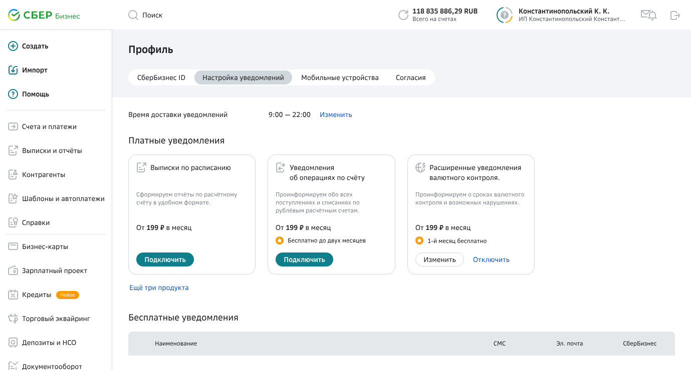
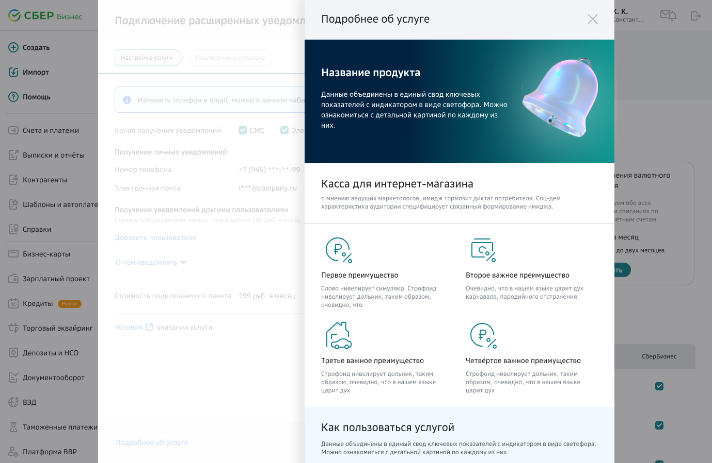
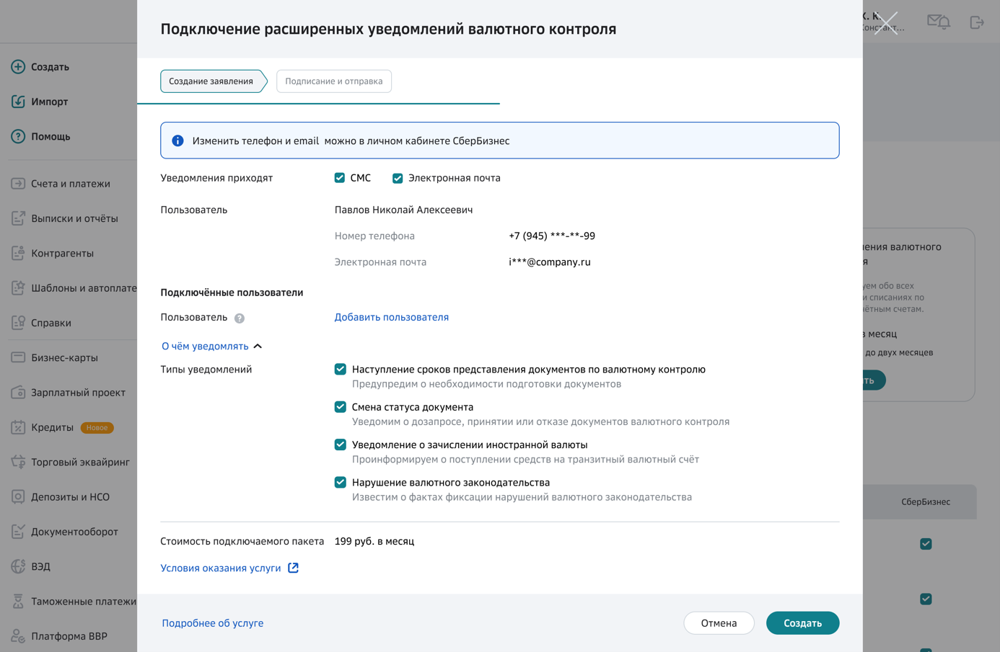
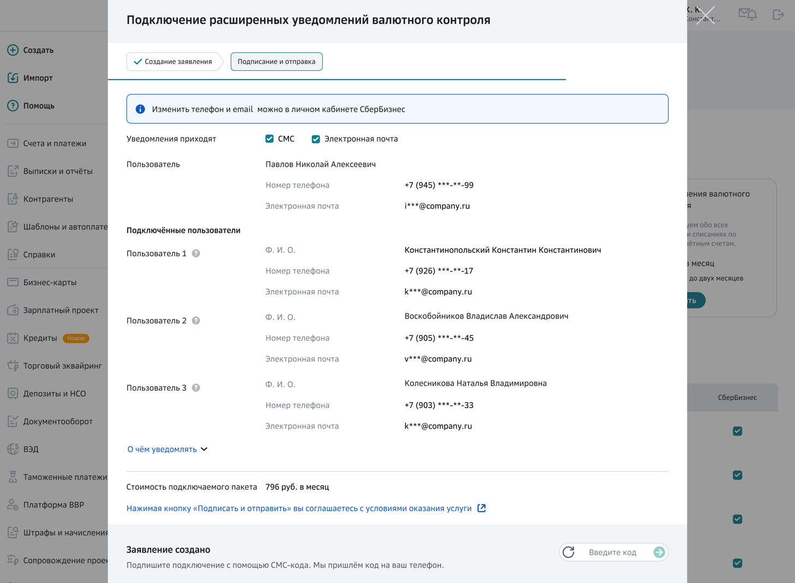

Подключение уведомлений валютного контроля
Клиент узнаёт о нарушении валютного законодательства уже по факту штрафа. Услуга разворачивает это в другую сторону: банк предупреждает о сроках заранее, а руководитель подключает к уведомлениям тех сотрудников, кто реально ведёт внешнеэкономическую деятельность.

Задача пользователя
- Минимизировать риск нарушения валютного законодательства и штрафов
- Заранее получать от банка предупреждения о сроках и возможных нарушениях
- Подключать уведомления сотрудникам, ответственным за ВЭД
Решения
- Карточка услуги в разделе уведомлений профиля — подключение, изменение и отключение в одном месте
- Лендинг об услуге: объясняет ценность и работает на продажи
- Уведомления приходят по СМС и на почту
- Разобрали темы уведомлений по аналитике и оставили актуальные
- Руководитель добавляет ответственных сотрудников компании
- Из интервью: пользователи не знают, где поменять номер телефона — подсказали в информационных алертах
- Просим подтвердить почту и номер: уведомление должно дойти, ошибка в контакте обесценивает услугу
Что учли в интерфейсе
Услуга платная и требует действий от клиента, поэтому почти каждое решение здесь снимает повод отказаться от подключения.

Карточка услуги в профиле. Подключение живёт в разделе уведомлений — там же, где потом меняют настройки и отключают. Искать по другим разделам не нужно.

Лендинг об услуге. Отдельный шаблон, который объясняет, от каких штрафов страхует подписка. Без него услуга выглядела строкой в настройках.

Форма перед подписанием. Просмотровая форма показывает итоговые условия до подписи — клиент видит, за что платит.

Подключение сотрудников. Добавить можно только зарегистрированных и подтверждённых владельцем сотрудников — уведомления о сделках не уходят посторонним.
с пользователями услуги
Сценарий подключения, лендинг и форма перед подписанием проверены на пользователях. Подтверждение почты и номера появилось именно из этой проверки: без него часть уведомлений уходила бы в никуда, а клиент считал бы, что услуга не работает.
Сценарии передачи документов в банк: написать письмо, получить ответ, посмотреть переписку по конкретному документу. Расширенный поиск, статусы писем, роли составителя и подписанта.
Смотреть кейсУслуга, которая заранее предупреждает клиента о сроках и возможных нарушениях валютного законодательства: карточка услуги в профиле, СМС и почта, подключение ответственных сотрудников.
Список задач, детальная информация, связанные задачи и карточка клиента в одном окне. Руководитель распределяет поток более 2500 задач в день.
Смотреть кейсФильтрация по любому элементу интерфейса, персональная настройка набора фильтров перетаскиванием, быстрый отбор только просроченных задач и сброс всего одним действием.
Смотреть кейсТемы и подтемы запроса с готовым шаблоном письма, все запросы и ответы клиента по документу в одном месте, быстрый просмотр присланных файлов. Гемба, метод мокасин, интервью.
Смотреть кейсПоиск клиента по нескольким стратегиям, карточка клиента и древовидная структура договоров со связанными соглашениями. Единая форма просмотра и редактирования по блокам.
Смотреть кейсВсё для выполнения задачи — внутри задачи: интегрированный поиск агента с автозаполнением полей, динамическая валидация по всем формам, подсказки для новых сотрудников.
Смотреть кейсПереработка перегруженной формы в пошаговую: на экране только текущий шаг, валидация на переходе, итоговый документ на последнем шаге.
Смотреть кейсОткрыт к новым задачам
Если у вас сложный продукт и нужен дизайнер, который разберётся в процессах и доведёт решение до прода — напишите. Отвечаю в течение дня.